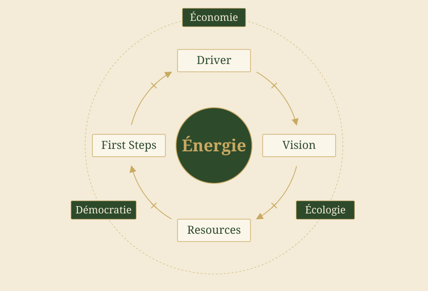
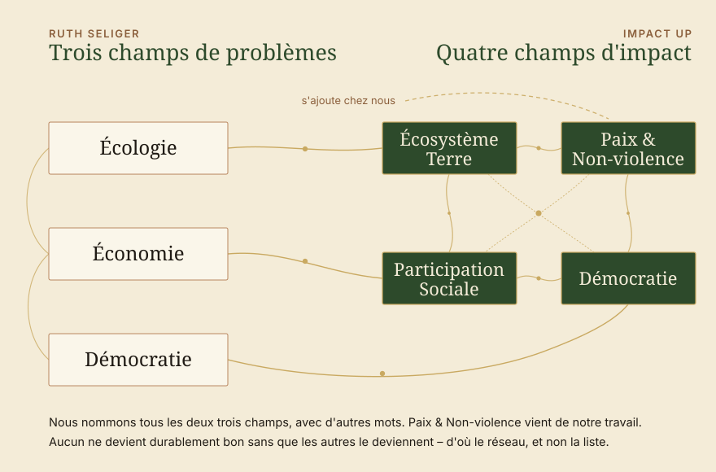
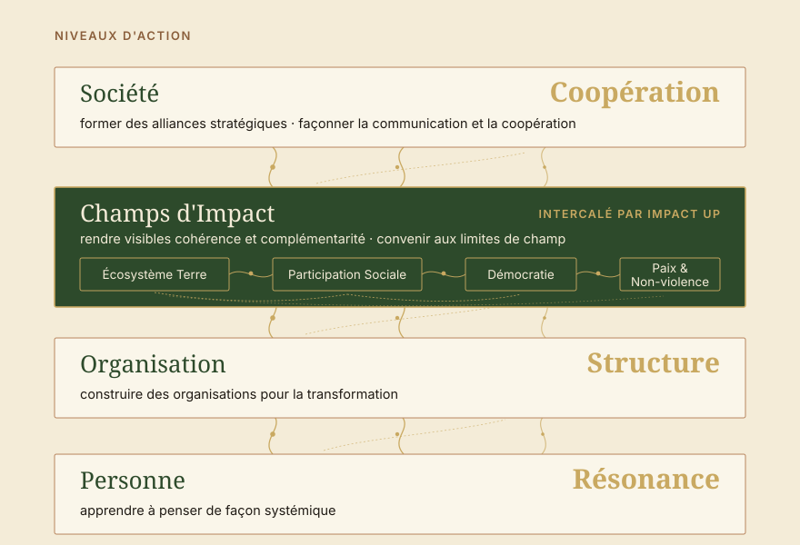

Impulsion · Comment devenir vraiment efficaces
Le livre Systemische Beratung der Gesellschaft. Strategien für die Transformation de Ruth Seliger nous a inspirés. Ruth Seliger vient du développement organisationnel systémique et veut améliorer la société. C'est une approche importante de notre institut : là où un impact doit être atteint, la société doit aussi être améliorée. Et tout comme Seliger, c'est exactement là que nous voulons travailler de manière systémique. Un check pour voir comment les idées de Seliger s'accordent avec les nôtres — l'approche systémique du conseil d'Impact Up mise à l'épreuve.

Comment le livre est construit
D'abord le regard, ensuite le processus.
Comment passe-t-on de l'analyse de la société à une stratégie ? Et comment devenons-nous vraiment efficaces ? Développeuse organisationnelle systémique de Vienne, Ruth Seliger applique son expérience du conseil à la société. Une lecture passionnante, car elle aboutit à de nombreuses réflexions proches de celles que nous poursuivons ici. Quelques réflexions, quelques idées et, bien sûr, quelques parallèles avec Impact Up — vous les trouverez ici.
Ruth Seliger est consultante systémique, et le livre commence là d'où elle vient. Sur une cinquantaine de pages, elle pose les bases : les modèles du changement – le concept technique, le concept dialectique, le concept systémique. Puis la clarification du contexte, avec la question de savoir si la société peut se lire comme un système client. Puis la description du problème et la clarification du mandat, ce qui se trouve au début de tout accompagnement. C'est là que réside le véritable travail de traduction du livre : un savoir-faire depuis longtemps établi dans le conseil systémique est porté à un niveau où personne ne délivre de mandat.
Une observation porte tout cet édifice. La société peut être observée – et celui qui l'observe en fait toujours partie. Il n'existe aucun point extérieur d'où la situation pourrait être considérée de façon neutre. Qui travaille avec cela travaille sur un système dans lequel il figure lui-même.
À la fin de cet édifice se trouve la boussole stratégique avec la formule du changement, et c'est seulement ensuite que commence la partie principale : le processus stratégique selon driver, vision, ressources et premiers pas. C'est là, avec le driver, que se trouve aussi l'état des lieux – économie, écologie, démocratie. Il est sans fard. Une société s'engage dans des temps difficiles, et personne ne fait comme si de la bonne volonté suffisait à changer de cap. C'est du réalisme, et c'est précisément pour cela que la suite tient.
À la fin se trouve, comme le dit la quatrième de couverture, un instrumentaire pour la transformation : « un coffre au trésor de théorie systémique, de modèles, de concepts et d'instruments pour élaborer des stratégies sur le chemin de l'analyse à la vision » (Ruth Simsa, Vienne).


Cocréation d'énergie
La société n'a pas de direction.
Que la société n'ait pas de direction est une bonne chose et fait partie de la démocratie, mais cela rend certaines choses exigeantes, surtout lorsqu'on regarde avec les lunettes du développement organisationnel. Qui a déjà essayé de porter un sujet « dans la société » connaît le sentiment : on écrit, on met en réseau, on argumente, et l'on saisit pourtant le vide, parce qu'il n'existe aucun service compétent. Il n'y a pas d'interlocuteur qui délivre un mandat, ni personne pour l'exécuter.
S'il n'y a pas de centrale, ce qui compte est ce qui naît entre les participants. C'est pourquoi, chez Seliger, les alliances, la communication sociétale et la coopération sont les stratégies centrales pour le niveau sociétal. Une boussole qui accompagne le chemin : d'abord les drivers, ensuite la vision, ensuite les ressources, ensuite les premiers pas. Ce qui en naît naît entre les personnes – et c'est pourquoi il est ici question d'énergie.
Driver × Vision × Resources × First Steps = Énergie

Seliger établit ici cette formule du changement comme boussole stratégique. Elle nomme les éléments qui produisent l'énergie – la force d'où naît le mouvement. L'essentiel est le signe de multiplication : les quatre éléments sont multipliés. Si l'un tombe à zéro, tout le mouvement tombe. Qui a oublié ce dont il voulait s'éloigner au départ n'ira pas loin, même avec la meilleure vision. Qui ne voit plus ses propres ressources se fatigue, aussi clair que soit le pas suivant.
Toute la partie principale suit ces quatre éléments. « Pourquoi ? » Avec le driver vient l'urgence, et avec elle la situation de l'économie, de l'écologie et de la démocratie. « Vers où ? » Pour la vision, Seliger distingue soigneusement : les utopies expriment le désir et peuvent rester hors d'atteinte, les visions dessinent un avenir vers lequel il est réellement possible d'aller, et les objectifs les ramènent à ce qui est maniable. « Avec quoi ? » Pour les ressources, c'est une chasse au trésor – quelles ressources avons-nous, sur quoi pouvons-nous bâtir ? « Comment ? » Pour les premiers pas, on intervient sur trois niveaux à la fois.
À la fin de ce calcul se trouve l'énergie – l'énergie de la transformation, l'énergie du changement. Et il est passionnant de constater qu'il doit s'agir ici d'une forme d'énergie sociale : une énergie qui naît entre les personnes. Elle maintient la collaboration en mouvement, et elle explique pourquoi la coopération demande plus qu'un bon plan. Dans la transformation sociétale, ce qui compte, ce sont moins les plans justes que l'énergie qui porte.
Où nous retrouvons Impact Up
Trois champs de l'urgence, quatre champs de l'impact

Nos champs d'impact sont nés indépendamment de ce livre, à partir du travail lui-même, des personnes et de la résonance. Il est d'autant plus beau de voir combien ils sont proches : l'écologie de Seliger est notre Écosystème Terre, son économie est tout près de la Participation Sociale, et pour la démocratie nous employons le même mot.
Chez elle, ils sont des champs de problèmes, rattachés au driver, et c'est cohérent : l'urgence vient de là. Nous appelons ces mêmes champs des champs d'impact, parce que nous en avons besoin comme lieu où les organisations s'accordent. Deux directions du regard sur le même objet – l'une demande ce dont nous voulons nous éloigner, l'autre où nous nous rencontrons.
Ce qui s'ajoute chez nous, c'est la Paix & Non-violence. La paix positive signifie plus que l'absence de guerre – l'absence de discrimination, de violence structurelle et culturelle. Cette logique s'étend aux autres champs, et chez Seliger elle est étroitement liée aux problèmes de la démocratie. La penser avec le reste a pour nous un poids propre, parce que les gens ne suivent que là où ils ne sont pas ignorés, et parce qu'il y a là beaucoup de méthode pour la coopération et la compréhension mutuelle.
Ce que nous voyons tous les deux sans changement, c'est le réseau serré et les nombreux liens affirmés entre les champs : aucun de ces champs ne devient durablement bon sans que les autres le deviennent aussi. Qui veut par exemple réduire le changement climatique doit penser la justice climatique, c'est-à-dire la participation sociale. La participation économique ne fonctionne pas sérieusement sans démocratie, sinon c'est de l'assistance et non de la participation. C'est pourquoi, chez nous deux, les champs se tiennent en réseau et non en liste.
Où nous ajoutons quelque chose
Entre organisation et société.
Pour les premiers pas, Seliger distingue trois niveaux d'action. Au niveau de la personne : apprendre à penser de façon systémique. Au niveau de l'organisation : organiser la transformation sociétale. Au niveau de la société : former des alliances stratégiques, façonner la communication et la coopération. Que la coopération figure tout à la fin nous a réjouis – chez nous, elle occupe la même place. La coopération est centrale pour notre société, la coopération est la notion centrale de la transformation. Nous abordons les mêmes notions par les perspectives et cherchons d'abord, dans la réflexion, les résonances, les structures et les coopérations qui mènent à l'impact.
L'organisation se situe entre la personne et la société. Pour Seliger, elle est le lieu central où la transformation peut s'organiser. La logique systémique des organisations est « que la communication dans une société peut être ordonnée – organisée – façonnée. Elles servent à structurer des sous-systèmes fonctionnels de la société. » Les structures au sein des organisations sont pour nous la possibilité centrale de façonner l'impact vers l'extérieur.

Nos quatre perspectives sur l'impact : la personne avec la résonance, l'organisation avec la structure, les champs d'impact en réseau intercalés, la société avec la coopération au sommet.
Entre l'organisation isolée et la société dans son ensemble, les champs d'impact constituent un niveau de travail supplémentaire, parce qu'à ce niveau, selon nous, une certaine cohérence et complémentarité entre les différents impacts est nécessaire. Ce niveau de travail est pour nous celui où les impacts arrivent en premier à l'extérieur et où la capacité de connexion est requise. Ce qui, pour Seliger, est un sous-système fonctionnel de la société, nous l'appelons champ – car les champs, nous pouvons les poser de manière contextuelle au niveau du travail et les utiliser comme premier pas sur le chemin de la société, afin de vérifier la cohérence et la complémentarité des impacts.
C'est pourquoi nous parlons de limites de champ plutôt que de limites de système : à un champ, on peut convenir de choses concrètes. Il s'agit de cohérence et de complémentarité, c'est-à-dire de savoir si les impacts de différentes organisations se soutiennent ou s'annulent. Les quatre grands champs ne sont que l'entrée. Ils s'affinent d'eux-mêmes dès que l'on travaille avec eux : champs de quartier, champs thématiques – assez de logements pour tous, une alimentation saine, des soins médicaux suffisants.
Ce que nous emportons du livre dans notre travail
Deux choses qui continuent de travailler chez nous.
Rendre d'abord les ressources visibles. Le mouvement habituel part du déficit – analyser le problème, décomposer les causes, en déduire des mesures. Cela produit des dossiers impeccables et des personnes épuisées, parce que l'énergie vient du manque. La question de ce qui existe déjà, et de qui y travaille déjà, inverse le sens.
Regarder l'énergie, pas seulement le plan. Quand une collaboration s'enraye, ce n'est que rarement le concept qui manque. Le plus souvent, l'énergie bute sur des ressources, des visions ou des drivers absents, ou sur le fait de ne pas savoir comment faire le pas suivant. Un bon regard d'ensemble sur les problèmes d'un projet.
Nous aimerions vous recommander ce livre. Si vous voulez transformer la société, il est utile à bien des égards. Vous y trouverez de nombreuses questions et méthodes pour commencer à transformer des éléments de la société. Et bien sûr, vous pouvez aussi nous contacter et aborder les choses avec nous : par les champs d'impact comme lieu de concertation, avec un accompagnement dans le processus, avec des personnes qui se posent les mêmes questions. Ce qui reste le plus longtemps de cette lecture n'est de toute façon ni un modèle ni une formule, mais une posture : que nous pouvons façonner notre avenir – non pas vraiment le piloter, mais commencer ensemble et façonner les choses.
Vers la fin du livre, Ruth Seliger aborde entre autres la conduite de l'organisation, et nous sommes déjà curieux – la conduite est son domaine de longue date, et son Dschungelbuch der Führung nous attend déjà ici.
→ Orientation vers l'Impact Systémique → Nos Champs d'Impact
Sources
- Seliger, R. — Systemische Beratung der Gesellschaft. Strategien für die Transformation. Carl-Auer, Heidelberg, 1re édition 2022.
- Seliger, R. — Das Dschungelbuch der Führung. Ein Navigationssystem für Führungskräfte. Carl-Auer.
- Rosa, H. — Resonanz und soziale Energie. Über Schlüsselbegriffe der Kritischen Theorie. Sous la dir. de Michael Kühnlein. Reclam, Ditzingen, 2026.Deux essais dans lesquels Rosa rattache l'énergie sociale à sa théorie de la résonance.